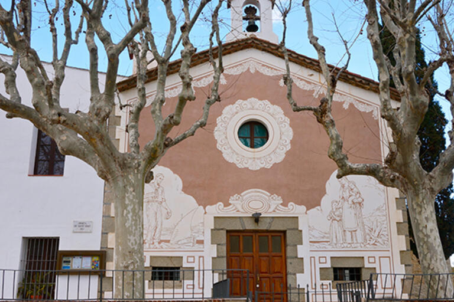

Visita · Mataró
Un petit temple de tradició marinera, construït el segle XVII , protegit com a bé cultural d'interès local. Ubicat als afores de la ciutat, tocant a les Cinc Sénies i prop de la riera de Valldeix…